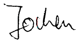

Über den Autor...
Jochen Duckeck

 Laichingen.
Laichingen.Hallo Freunde, ich bin Jochen Duckeck. Ich bin der webmaster und Autor von showcaves.com. Auf dieser Seite möchte ich Euch etwas mehr über mich erzählen.
Seit über 40 Jahren bin ich Mitglied im
Höhlen- und Heimatverein Laichingen.
Früher war ich sogar aktiver Höhlenforscher, wie die historischen Aufnahmen auf dieser Seite beweisen.
Und natürlich habe ich damals auch Führungen in der Laichinger Tiefenhöhle gemacht.
Nach Schule und Bundeswehr habe ich in Braunschweig, einer Stadt in Niedersachsen, Informatik und Geologie studiert. Leider gibt es in der norddeutschen Tiefebene keine Höhlen, die nächsten waren im Harz, die Hälfte davon auf der anderen Seite des eisernen Vorhangs. Nach der Grenzöffnung 1989 besuchte ich zum ersten Mal die ostdeutschen Höhlen, und die Idee, die Informationen über diese Höhlen auch anderen zugänglich zu machen, führte schließlich zu einem gesamtdeutschen Schauhöhlenführer. Die erste Version war als gedruckte Broschüre gedacht, wurde jedoch nie veröffentlicht.
Als ich anfing zu arbeiten, zog ich in die Stadt Nürnberg. Mein erster Job an der Universität beinhaltete die Pflege der Website. 1993 gab es keine privaten Webzugänge und Websites gehörten nur Institutionen wie Universitäten. Ich erkannte bald, dass dies eine einfache Möglichkeit war, meine Schauhöhlendaten zu veröffentlichen. Mit Erlaubnis meines damaligen Arbeitgebers waren die Seiten von showcaves.com seit 1993 online. Zuerst nur Deutschland, dann eine englische Version udn später weitere Länder. Viele Jahre später konnte ich erst meine eigene Domain und meinen eigenen Webspace bekommen.
Ich interessiere mich sehr für Höhlenvermessung, allerdings mehr für die zugrundeliegende Mathematik als für das Schleppen von Maßband und Theodolith durch enge Schlufe.
Ich habe mich bereits in meiner Diplomarbeit mit der Modellierung von dreidimensionalen Körpern beschäftigt (siehe
3D-Modeling for the Analysis of Range Data ).
).
Ich bin durch den
Verband der deutschen Höhlen- und Karstforscher e.V.
zum deutschen Delegierten bei der
UIS Informatics Commission (UISIC)
ernannt worden.
Außerdem bin ich auch noch Mitglied Nummer 48284 beim
National Speleological Society (NSS).
Für mich waren dabei vor allem die hervorragende Zeitschrift und die Rabatte bei den Höhlenbüchern interessant.

Jochen Duckeck, Archivstr. 11, 90408 Nürnberg, Deutschland.
E-mail: .
Mehr Kontaktmöglichkeiten hier.
 Index
Index Themen
Themen Hierarchisch
Hierarchisch Länder
Länder Karten
Karten Suche
Suche{kind=link}